Configuration and installation instructions for the SKTEditor are available at the SKTEditor's web site (http://sscweb.gsfc.nasa.gov/skteditor/).
Additional, on-line help is available from the application's help menu.
This will demonstrate how to:
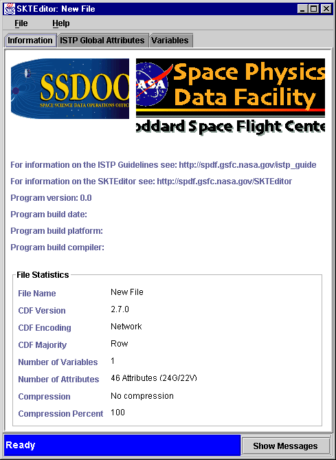
This first page is for information purposes only. It reports on the
software components being used and gives a basic description of the file
being opened. As you can see, starting the editor automatically generates
the creation of a new file.
1. Click on the tabbed panel to select the ISTP Global Attributes
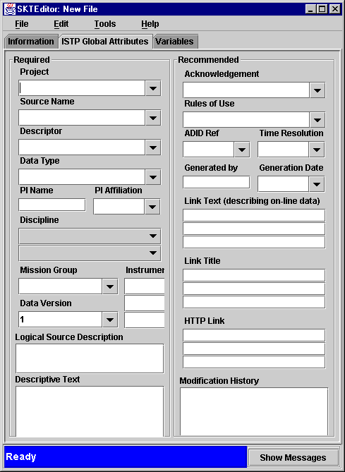
Notice that the menu bar has changed to File, Edit, Tools and Help.
The panel is divided into two sections, the required attributes and the recommended attributes. To insure compliance, you need to fill in a value for each required fields. The recommended are discretionary.
The editable pull down menus make it convenient to select values in standard cases.
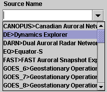
2. Start filling in the global attributes values.
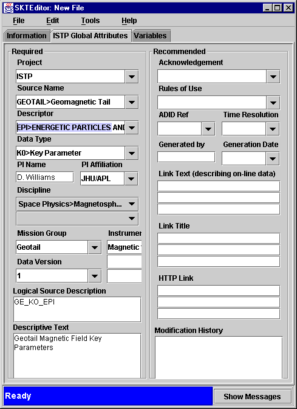
If you want to ensure that the global attributes do meet the minimum ISTP standard, select the Tools menu, then the ISTP Compliance Check menu item and finally click on Global Attributes.
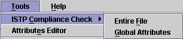
A compliance check is performed and the status available on the status bar and the message window. Both are located at the bottom of the panel.
The Status bar gives a color coded abbreviated form of the status of
the current editor operation. It varies between blue for Ready, Yellow
for Warning and Red to indicate an ISTP compliance error.
In this example, with all of the required attributes having been validated,
the Status Area remains blue and displays the following message:
To access thet message window, click on the Show Messages button. The following window will open:
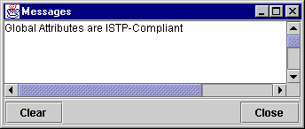
If the global attribute entries or lack of, had not been consistent with the ISTP recommended format, it would have been indicated by the status area changing color and text as such:
and the message window would contain information on the attribute(s) to change/add.
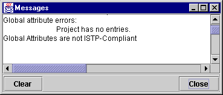
The next step consists of defining the
3. Click on the tabbed panel to select the Variables panel
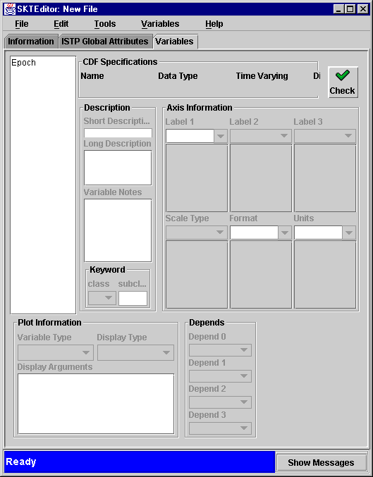
Notice that the menu bar has again changed to include Variables. The variable list to the left comprises only one variable, the Epoch variable. The rest of the
gives specific informations on each variable. It comprises the
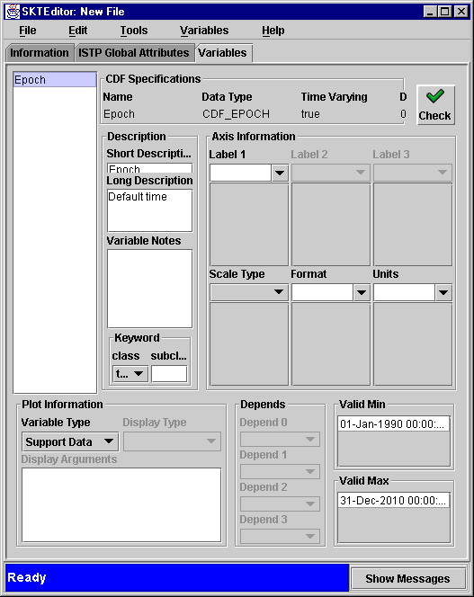
The Valid Min and Valid Max fields wich are required where added to the panel.
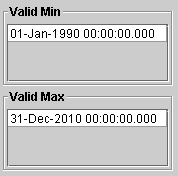
Epoch is given to you whenever you create a new file.
Let us assume that you now need to define a density scalar variable.
1. Select New under the Variables menu
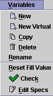
The New Variable Dialog window will be displayed.
2. You need to enter Density in the Name field, select the Data Type to be CDF_REAL4, check the Record Variance (Time) box, keep the Dimensions field to 0 and select Create:
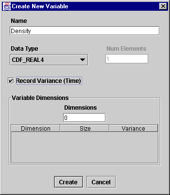
The Density variable has been added to your CDF file:
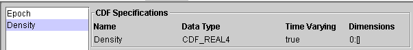
3.Check for ComplianceThere are two ways to check for compliance per variable.
The Check button
or the Variables Menu via the Check menu item
The following status will be displayed:
and the following message:
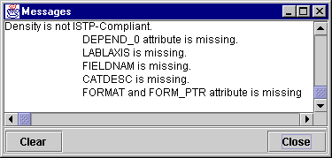
4. Make your file ISTP compliant by adding the missing fields
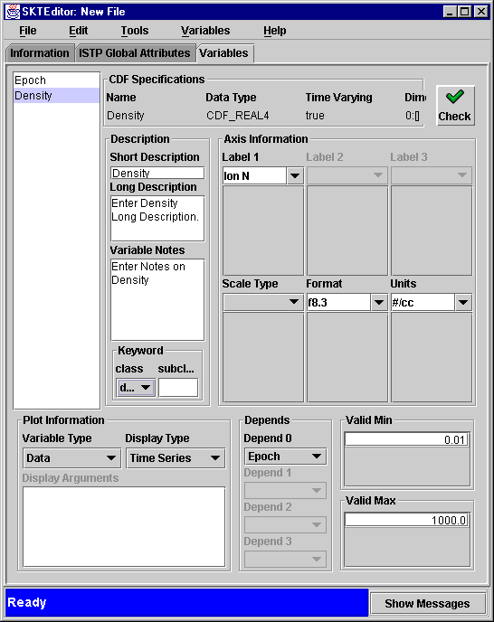
1. Select Save As under the File menu:A Save window listing the CDF file in your directory and prompting you for a file name will be dispalyed: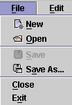
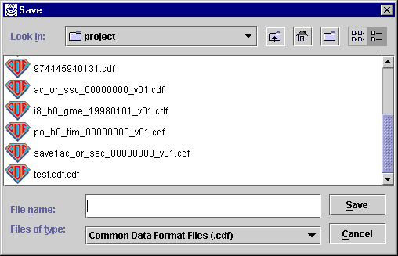
2. Enter a name with a cdf extension and click on Save.Your new ISTP compliant CDF file is now saved and could be edited using the SKTEditor again.